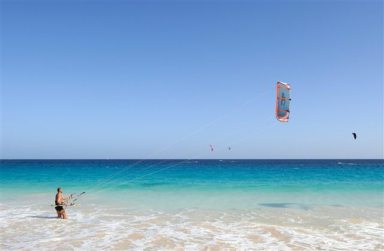
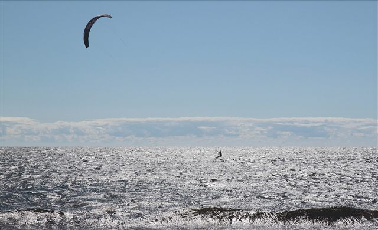
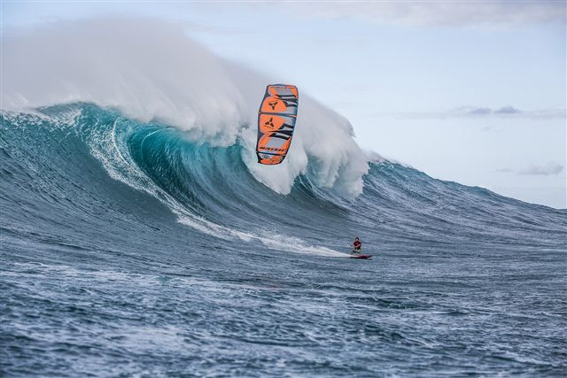
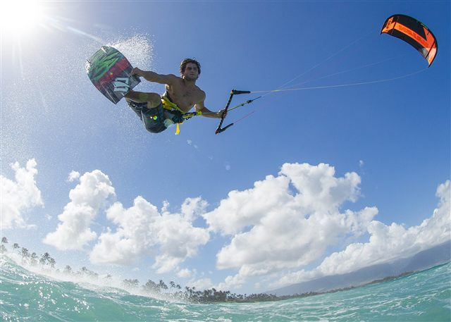
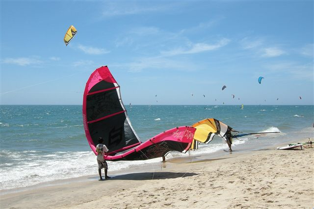
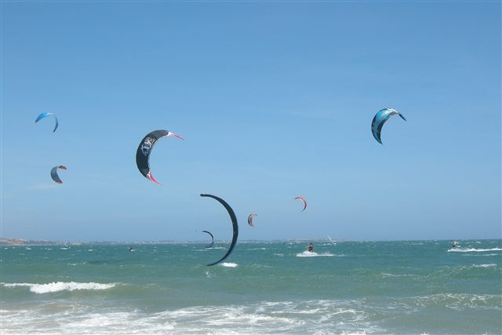
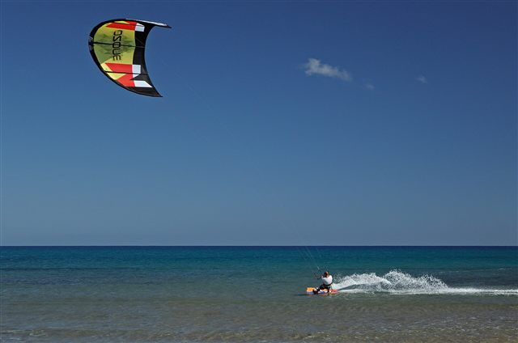
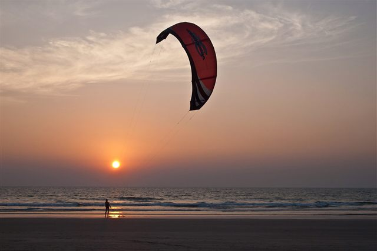
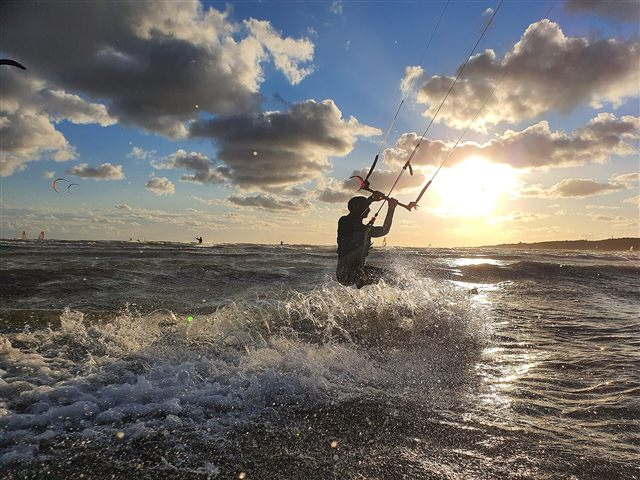

Galeria
Zobacz, jak to wygląda w praktyce
Kilka kadrów z wody i plaży. Kliknij zdjęcie, aby je powiększyć.









O zdjęciach
Zdjęcia pochodzą z Wikimedia Commons (licencje CC BY / CC BY-SA / CC0).
Pokaż autorów i licencje
- kite-01 — Cayambe, CC BY-SA 3.0 (via Wikimedia Commons)
- kite-02 — Cephas, CC BY-SA 3.0 (via Wikimedia Commons)
- kite-03 — Pierre Bouras, CC BY-SA 4.0 (via Wikimedia Commons)
- kite-04 — MakenaStockMedia, CC BY-SA 4.0 (via Wikimedia Commons)
- kite-05 — Vyacheslav Argenberg, CC BY 4.0 (via Wikimedia Commons)
- kite-06 — Vyacheslav Argenberg, CC BY 4.0 (via Wikimedia Commons)
- kite-07 — Ввласенко, CC BY-SA 3.0 (via Wikimedia Commons)
- kite-08 — Vyacheslav Argenberg, CC BY 4.0 (via Wikimedia Commons)
- kite-09 — Da.Informator, CC0 (via Wikimedia Commons)